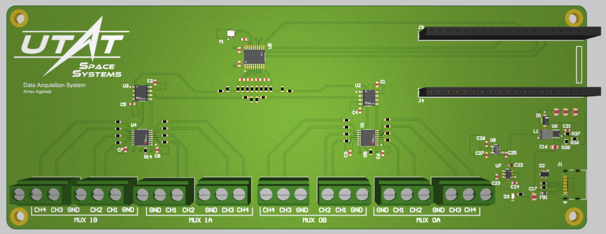
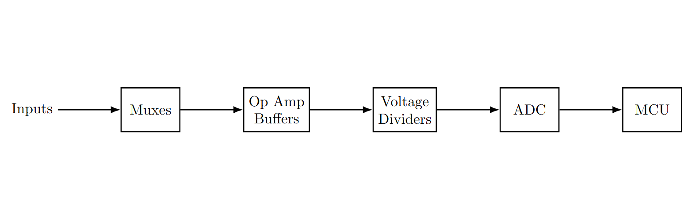
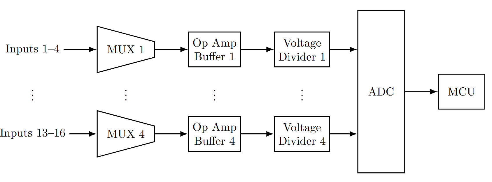

Electrical & Computer Engineering
Data Acquisition System PCB for the University of Toronto Aerospace Team (UTAT)
This is a 16-input data acquisition system PCB for the University of Toronto Aerospace Team (UTAT). I proposed this project to the team since we only hade a single
programmable multimeter which we could use for long-term battery testing, and we needed more inputs to monitor our battery pack. The PCB features a 4-channel 24-bit ADC,
16 multiplexed analog inputs, high impedance buffers, and digital readout to a Raspberry Pi microcontroller over SPI.
You can view the Altium project here.
PCB Rendering

Setting the Requirements
I set the requirements for the project using the specifications of the battery pack and by considering flexibility in the system for future use. I wanted to make sure
that the system could be used for other projects, and not just for the current battery pack.
Our current battery pack is a 2S2P Li-ion pack with a nominal cell voltage of 3.6V, charging voltage of 4.2V, and nominal pack voltage of 7.2V. We may also test a 4S configuration, which would give a
pack voltage of 14.8V.
The main requirements were:
- Must provide at least 8 analog inputs
- Must be able to measure voltages up to 15V with some negative voltage support
- Must provide a high impedance buffer for the analog inputs
- Must be power using USB-C

Component Selection
Based on these requirements and the high-level design, I selected the components for the project.
- ADS131M04: 4-channel 24-bit ADC
- OPA2182: multiplexer-friendly, low noise, low offset voltage, low offset current, low power op-amp
- MUX509: 2-channel 4-to-1 analog mulitplexer
- Raspberry Pi Pico: microcontroller
